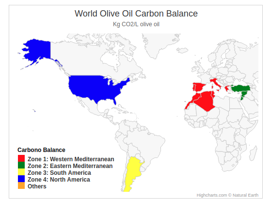
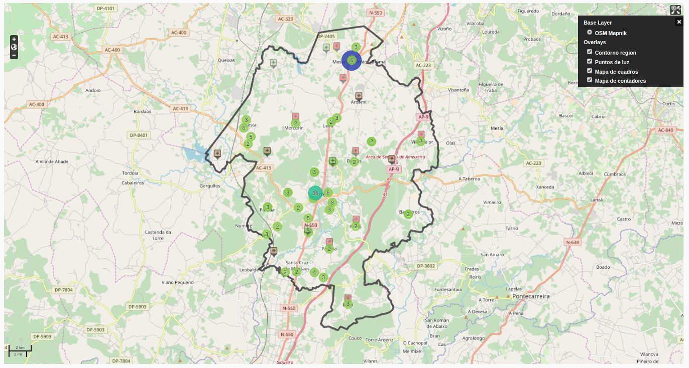
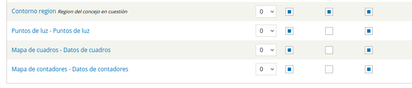
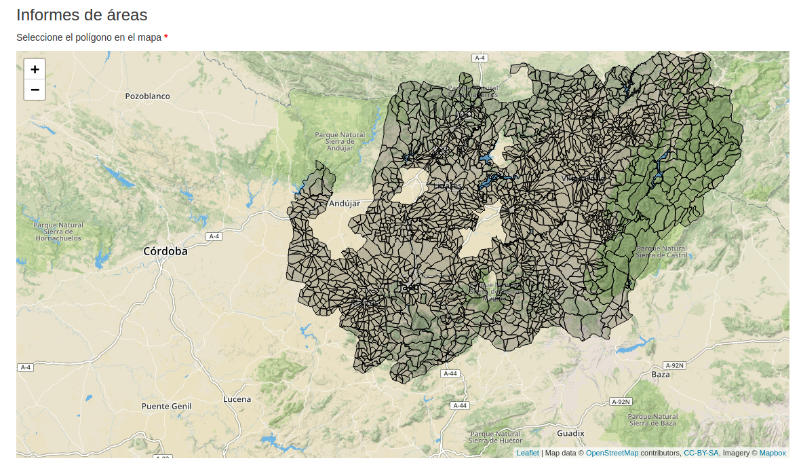
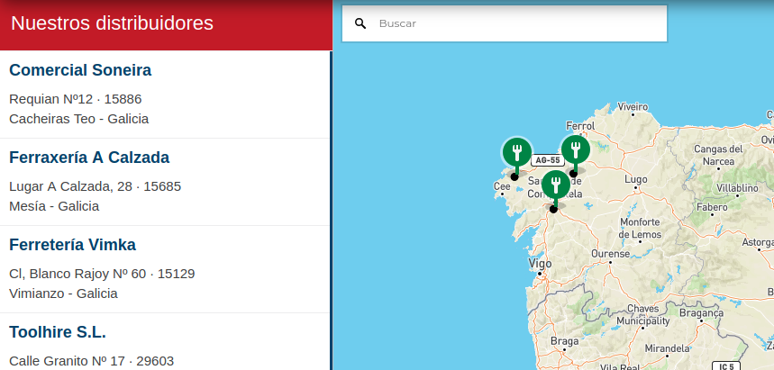

WEB MAPPING
CHRISTIAN LÓPEZ RODRÍGUEZ
A MAIA VALLEY - http://www.amaiavalley.com
Web mapping
"Representación de objetos (puntos, áreas) de forma geolocalizada de manera que los usuarios puedan sacar conclusiones"
Gráficas
Mapas
Web mapping
Highmaps
Librería de representación gráfica de mapas
Sin rutas, carreteras, vista de satélite ni localización
Licencia de uso gratuíta para proyectos sin beneficio económico
Visualización completamente personalizable
Highmaps
Zonas geográficas
Parte del código
Highcharts.data({
// Initiate the chart
Highcharts.mapChart('container', {
chart: {
borderWidth: 1,
borderColor: 'lightgray'
},
title: {
text: data_conf.title
},
mapNavigation: {
enabled: true,
enableButtons: false
},
legend: {
title: {
text: data_conf.legend_title,
},
align: 'left',
verticalAlign: 'bottom',
floating: true,
layout: 'vertical',
valueDecimals: 0,
backgroundColor: (Highcharts.theme && Highcharts.theme.legendBackgroundColor) || 'rgba(255, 255, 255, 0.85)',
},
series: [{
data: data,
mapData: Highcharts.maps['custom/world'],
joinBy: ['iso-a2', 'code'],
animation: true,
name: 'Carbono Balance',
point: {
events: {
click: pointClick
}
},
tooltip: {
headerFormat: '{series.name}
',
pointFormat: '{point.name}: {point.balance:.2f} ' + data_conf.sufix,
},
shadow: false
}]
}
});
OpenLayers
Geolocalización de elementos (puntos y áreas) en mapas
Varias capas (carreteras, relieve, contornos, etc..)
Sin rutas pero con localización
Licencia de uso libre
Integración completa con Drupal 7
OpenLayers
Puntos, área y popup
Configuración desde Drupal 7
Leaflet
"Evolución" de OpenLayers (mejoras en eficiencia)
Licencia de uso libre
Más reciente. Menos componentes. Fácil de comprender
Más ligero. Eficiente con gran número de puntos/áreas
Leaflet
Polígonos agrarios
Creación de mapa
//Definimos el mapa
var mymap = L.map('mapa_informes_area').setView([datos.coordenadas.latitud, datos.coordenadas.longitud], datos.zoom);
L.tileLayer('https://api.tiles.mapbox.com/v4/{id}/{z}/{x}/{y}.png?access_token=pk.eyJ1IjoibWFwYm94IiwiYSI6ImNpejY4NXVycTA2emYycXBndHRqcmZ3N3gifQ.rJcFIG214AriISLbB6B5aw', {
maxZoom: 18,
attribution: 'Map data © OpenStreetMap contributors, ' +
'CC-BY-SA, ' +
'Imagery © Mapbox',
id: 'mapbox.streets'
}).addTo(mymap);
var poligonos = L.geoJSON(datos.poligonos, {
style : {
"color": datos.color_mouseout,
"weight": datos.weight_line
}
}).addTo(mymap);
GoogleMaps
Mundialmente conocido
Paquete completo (localización, rutas, búsquedas, relación con terceros, etc...)
Uso gratuíto pero con límites de acceso
Integración con GoogleCloud para la muestra de datos
Mapbox
"Evolución" de GoogleMaps (gráfica)
Mapa licencia de uso libre con límites.
Módulos (direcciones) de pago
Integración con otras librerías. Leaflet
Generación de filtros automáticos con datos geoJSON
Visualización completamente personalizable
Mapbox
Mapa básico
Creación de mapa
//Creamos el mapa
var map = new mapboxgl.Map({
container: 'map',
style: 'mapbox://styles/mapbox/streets-v10',
center: [-3.819084, 39.8915675],
zoom: 6
});
//Añadimos controles de zoom y movimiento de mapa
map.addControl(new mapboxgl.NavigationControl());
map.addControl(new mapboxgl.FullscreenControl());
map.on('load', function (e) {
//Añadimos los datos al mapa
map.addSource("stores", {
"type": "geojson",
"data": stores,
});
Tips and Tricks
Todo es JS
Comenzar es muy sencillo
Hacer algo diferente requiere estudio y pruebas
Realizar una visualización breve y escoger una vertiente
El uso de geoJSON facilita la representación
Dejar la visualización para el último momento